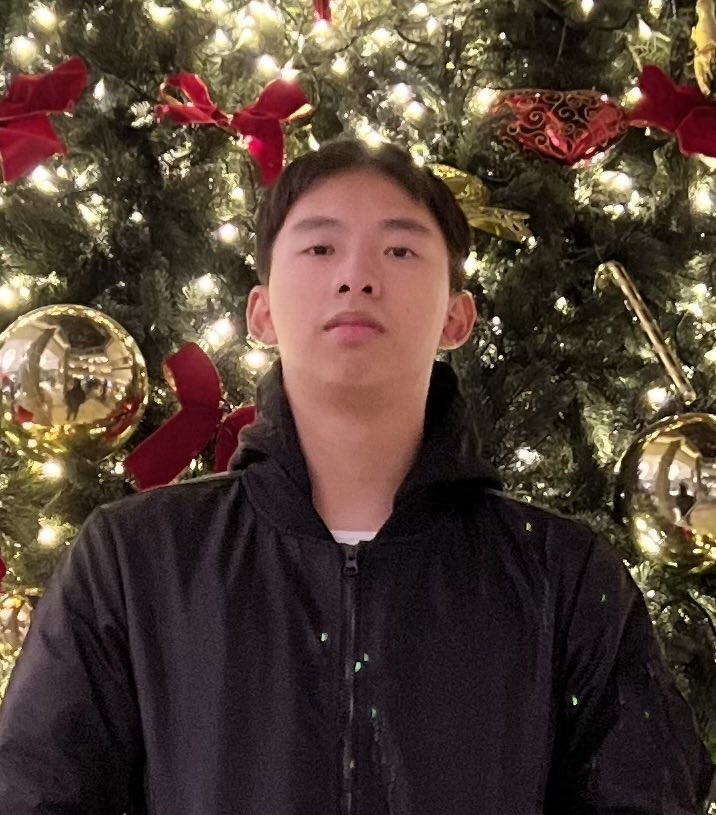

Hoang Mai Vu
Address: No.9 Songjiang Road, Zhongshan District,Taipei City
Phone: +886972638203
Email: vuhoangtexas@gmail.com

Education
Ming Chuan University(銘傳⼤學)
Major in Bachelor of International Business and Trade
- GPA: 4.0/4.0
- Top 1 in class ranking GPA of
freshman year and second
semester of sophomore year
(2021,2022,2023)
Activities
IUCr Crystal growing competition Aug 2018 - Jan 2020
- Responsibility for listening and running the project
- Work with teammate and respondent to
different types of situation
- Ensure information is accurate and valid
by creating and updating records of
crystal
WETECH competition Jan 2019- May 2019
- Sort and distribute correspondence as
soon as possible
- Plan and schedule meetings weekly for up
to date on the project
- Innovate ideas and executing them
precise and accurately as much as
possible
Achievement
- IELTS 8.0 (2023)
- Bronze medal ICUr Crystal Growing Competition Internationally and 2nd place nationally (2019)
- Silver medal ICUr Crystal Growing
Competition Internationally and 3rd place
nationally (2020)
- Placed runner up in WETECH project
nationally (2019)
Work Experience
Reference